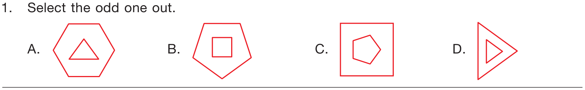
Select the odd one out.
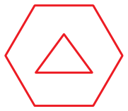
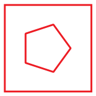
In option A, B and C, the figures are made up of two different shapes.
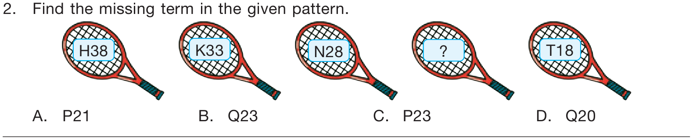
Find the missing term in the given pattern.
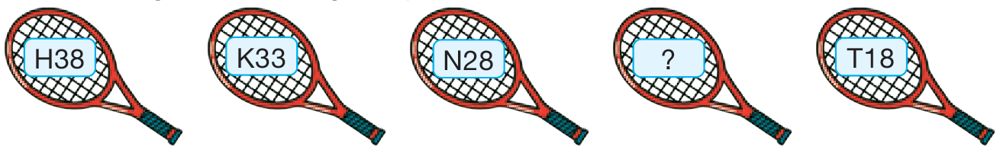
P21
Q23
P23
Q20
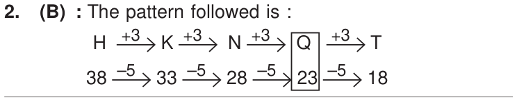
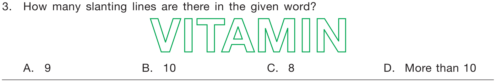
How many slanting lines are there in the given word?
9
10
8
More than 10
Total number of slanting lines = 16 i.e., more than 10.
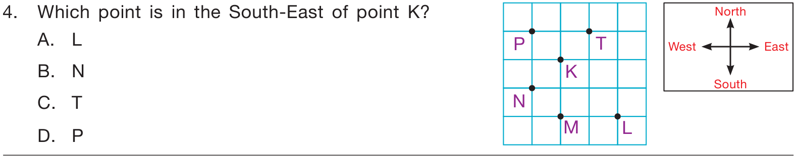
Which point is in the South-East of point K?
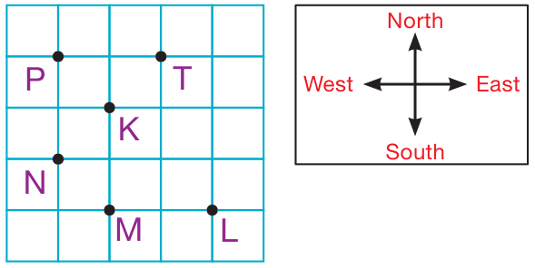
L
N
T
P
Point L is in the South-East of point K.
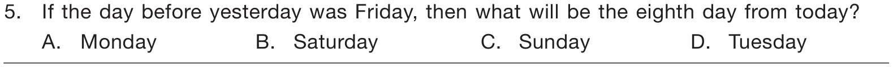
If the day before yesterday was Friday, then what will be the eighth day from today?
Monday
Saturday
Sunday
Tuesday
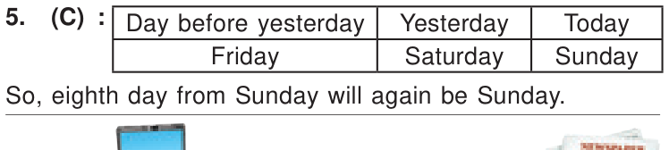
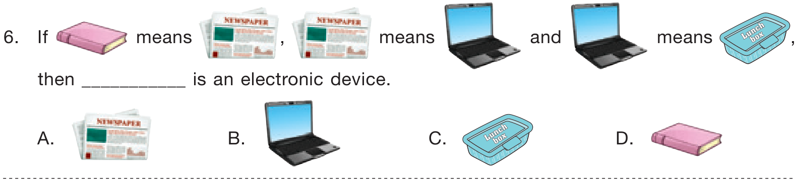
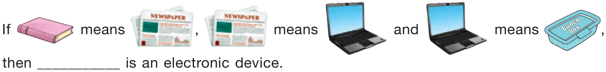
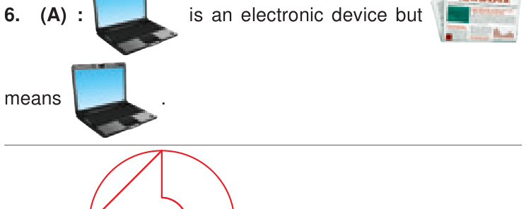
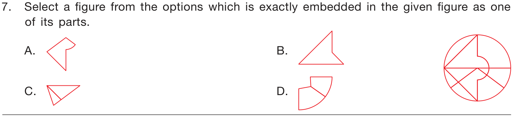
Select a figure from the options which is exactly embedded in the given figure as one of its parts.
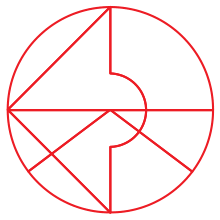
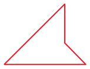
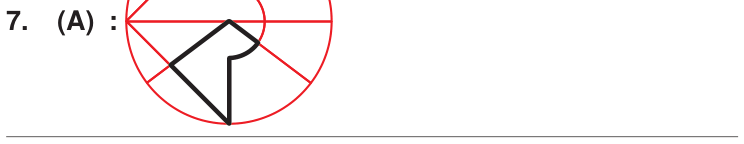
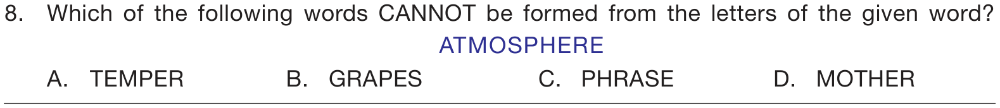
Which of the following words CANNOT be formed from the letters of the given word?
ATMOSPHERE
TEMPER
GRAPES
PHRASE
MOTHER
The letter G in the word GRAPES is not present in the given word.
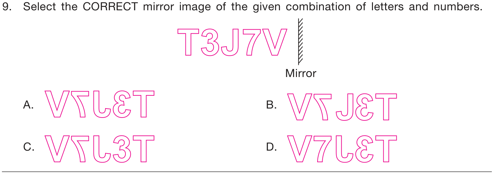
Select the CORRECT mirror image of the given combination of letters and numbers.
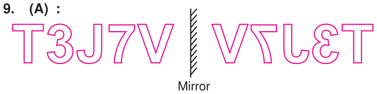
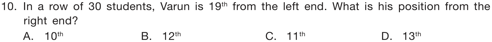
In a row of 30 students, Varun is 19th from the left end. What is his position from the right end?
10th
12th
11th
13th
Total number of students in the row = 30
Varun's position from the left end = 19th
So, Varun's position from the right end = 30 – 19 + 1 = 12th
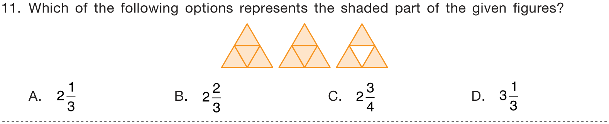
Which of the following options represents the shaded part of the given figures?
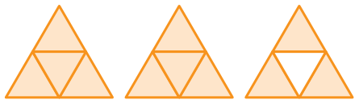
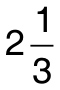
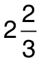
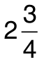
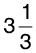
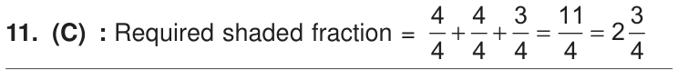
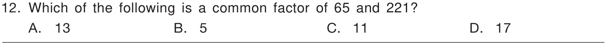
Which of the following is a common factor of 65 and 221?
13
5
11
17
Factors of 65 are: 1, 5, 13 and 65. Factors of 221 are: 1, 13, 17 and 221.
So, common factors of 65 and 221 = 1 and 13
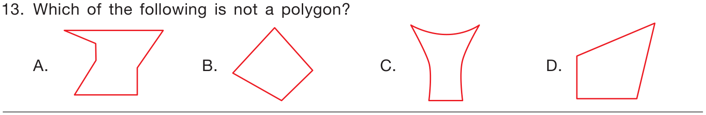
Which of the following is not a polygon?
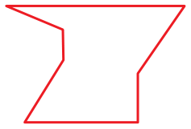
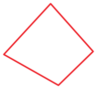
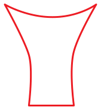
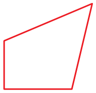
Polygon is made up of only straight lines. So, figure in option C is not a polygon.
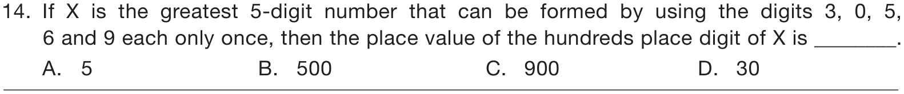
If X is the greatest 5-digit number that can be formed by using the digits 3, 0, 5, 6 and 9 each only once, then the place value of the hundreds place digit of X is ________.
5
500
900
30
Greatest 5-digit number that can be formed by using the digits 3, 0, 5, 6, 9 each only once = 96530
So, X = 96530
\ Place value of 5 in 96530 = 500
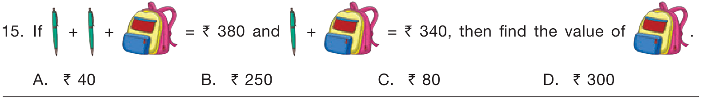
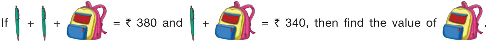
₹ 40
₹ 250
₹ 80
₹ 300
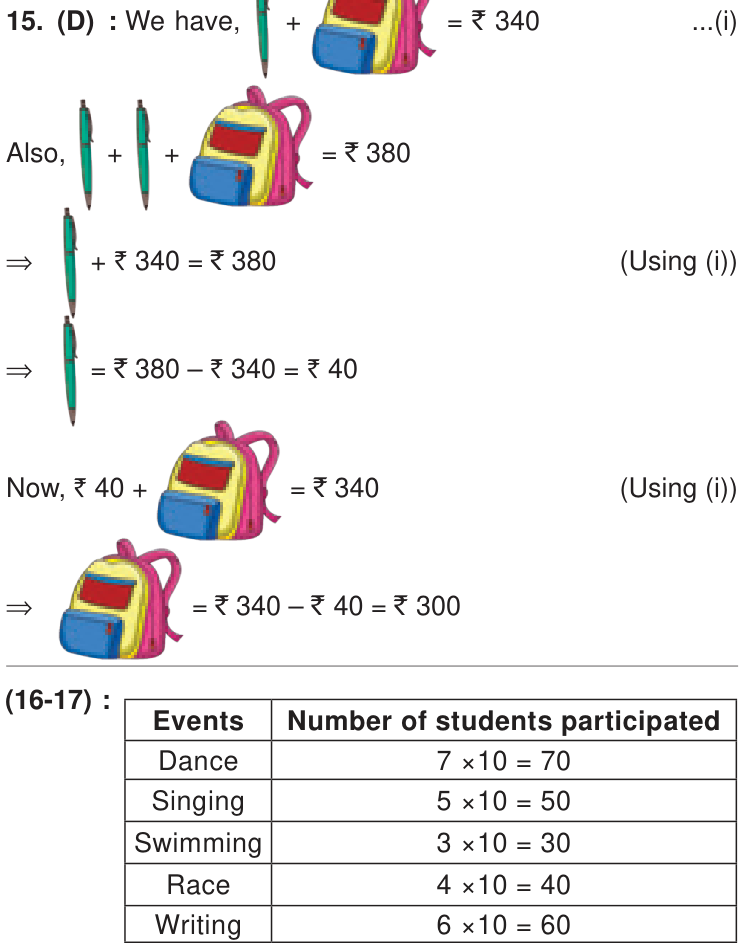
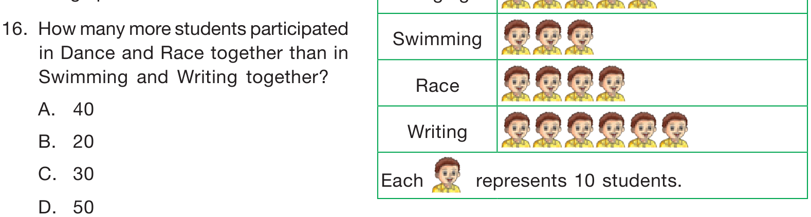
Direction (16-17) : The given pictograph shows the number of students who participated in five different events. Study the graph carefully and answer the following questions.
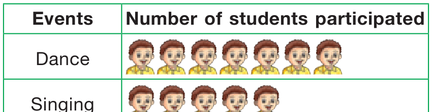
How many more students participated in Dance and Race together than in Swimming and Writing together?
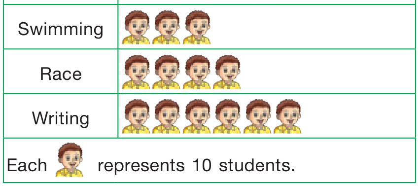
40
20
30
50
Number of students participated in Dance and Race together = 70 + 40 = 110
Number of students participated in Swimming and Writing together = 30 + 60 = 90
\ Required difference = 110 – 90 = 20
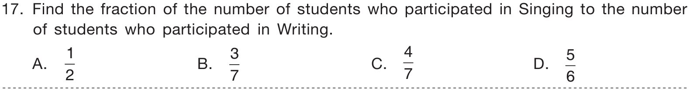
Direction (16-17) : The given pictograph shows the number of students who participated in five different events. Study the graph carefully and answer the following questions.
Find the fraction of the number of students who participated in Singing to the number of students who participated in Writing.
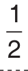
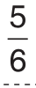
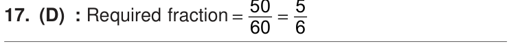
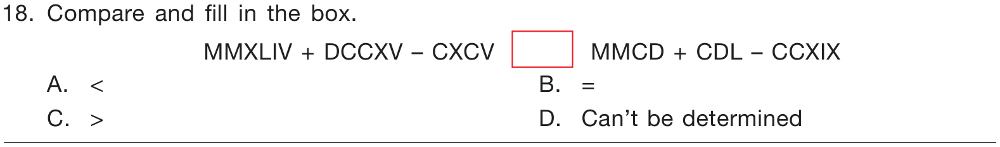
Compare and fill in the box.
MMXLIV + DCCXV – CXCV <
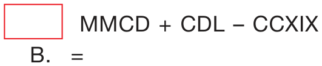
>
Can’t be determined
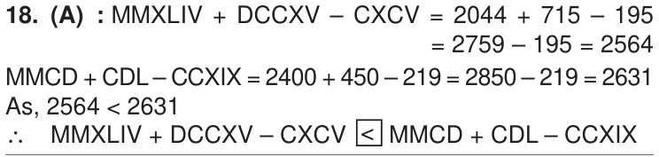
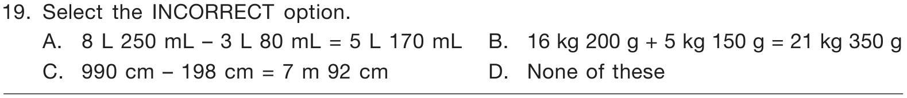
Select the INCORRECT option.
8 L 250 mL – 3 L 80 mL = 5 L 170 mL
16 kg 200 g + 5 kg 150 g = 21 kg 350 g
990 cm – 198 cm = 7 m 92 cm
None of these
Option A
Option B
Option C
Option D
Divya filled 27 L 400 mL petrol in her car on Monday, 20 L 150 mL petrol on Wednesday and 35 L 180 mL petrol on Saturday. How much total petrol did she fill in her car in three days?
80 L 180 mL
78 L 930 mL
82 L 730 mL
None of these
140
210
180
170
A rabbit runs 8 times around a square field, each of whose side is 28 m long. How much total distance did the rabbit cover?
112 m
196 m
896 m
712 m
Length of each side of field = 28 m
\ Distance covered in 1 round = 4 × 28 m = 112 m So, total distance covered in 8 rounds = 8 × 112 m = 896 m
Mr Verma has an apple farm. He has 42 apple trees in his farm. On each tree, there are 185 apples. How many apples are there in the farm?
6850
7500
7770
6760
Total number of trees in the farm = 42
Number of apples on 1 tree = 185
\ Total number of apples in the farm = 42 × 185 = 7770
Arun’s savings in the year 2016 was ₹ 305690. Next year, his savings exceeded the previous year’s savings by ₹ 50000. How much total amount of money did he save in both the years?
₹ 644560
₹ 601560
₹ 611380
₹ 661380
Anuj bought a ruler for ₹ XXIX, a book for ₹ CXL and a packet of crayons for ₹ LXXV. On which item did he spend maximum money?
A packet of crayons
A ruler
A book
Can’t say
Cost of a ruler = ₹ XXIX = ₹ 29 Cost of a book = ₹ CXL = ₹ 140
Cost of a packet of crayons = ₹ LXXV = ₹ 75 As, ₹ 140 > ₹ 75 > ₹ 29
\ Anuj spent maximum amount on a book.
94
48
86
144
Sonika left for her friend’s house at 1:15 p.m. Her father told her to be back home in 1 hour and 45 minutes. At what time does Sonika need to be home?
2:00 p.m.
2:30 p.m.
2:45 p.m.
3:00 p.m.
Sonika left her house at 1 : 15 p.m.
Time at which Sonika needs to be her home = 1 hr 45 mins after 1 : 15 p.m. = 3 : 00 p.m.
When rounded off to the nearest hundreds, Kanak’s house number becomes 18200. Which of the following could be the actual house number of Kanak?
18530
18264
18242
17232
18242 when rounded off to nearest hundreds becomes 18200.
Saksham has 1200 pencils. He wants to pack them equally in boxes. If he packs 24 pencils in 1 box, then how many boxes are required to pack all the pencils?
45
55
40
50
Total number of pencils Saksham has = 1200 Number of pencils in 1 box = 24
\ Number of boxes required = 1200 ÷ 24 = 50
90530 CMXCVIII 59000
99530 CMXCVIII 58000
99530 CMXCIX 58000
90053 CMXCIX 57000
(i) Greatest 5-digit number formed by using the digits 3, 0, 5, 9 each at least once = 99530
(ii) Greatest 3-digit even number = 998 i.e., CMXCVIII
(iii) 57842 when rounded off to the nearest thousands place becomes 58000.
P
R
Q
Can’t be determined
P. Perimeter = (5 + 5 + 3 + 5 + 5 + 9 + 5 + 5 + 3) cm
= 45 cm
Q. Perimeter = (4 + 2 + 4 + 2 + 2 + 2 + 5 + 1 + 5 + 3) cm = 30 cm R. Perimeter = (6 + 6 + 6 + 3 + 4 + 4 + 8) cm = 37 cm \ Figure P has maximum perimeter.
Match the time given in Column I with its 24-hour clock time given in Column II and select the CORRECT option.
Column I Column II
(i) Half past 8 in the morning (a) 21:15
(ii) Quarter past 9 in the night (b) 08:30
(iii) 20 minutes to 7 in the evening (c) 18:40
(i)-(a); (ii)-(c); (iii)-(b)
(i)-(c); (ii)-(a); (iii)-(b)
(i)-(b); (ii)-(c); (iii)-(a)
(i)-(b); (ii)-(a); (iii)-(c)
(i) Half past 8 in the morning = 8 : 30 am
= 08 : 30 hrs
(ii) Quarter past 9 in the night = 9 : 15 pm
= 21 : 15 hrs
(iii) 20 minutes to 7 in the evening = 6 : 40 pm
= 18 : 40 hrs
None of these
Identify the number using the given clues.
• Its hundreds place digit is 5 more than the tens place digit.
• Its ones place digit is the greatest 1-digit prime number.
• Its ten thousands place digit is the 3rd multiple of 2.
• Its tens place digit is the HCF of 4 and 18.
• Its thousands place digit is 6 less than the ones place digit.
61528
63729
61727
61947
Ones place : Greatest 1-digit prime number = 7 Ten's place : HCF of 4 and 18 = 2
Hundreds place : 5 more than 2 = 2 + 5 = 7
Thousands place : 6 less than 7 = 7 – 6 = 1
Ten thousands place : 3rd multiple of 2 = 2 × 3 = 6
So, the number is 61727.